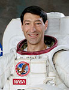

Lyndon B. Johnson Space Center
Houston, Texas 77058
|
National Aeronautics and Space Administration Lyndon B. Johnson Space Center Houston, Texas 77058 |
 |
Biographical Data |
||
Mario Runco, Jr.
EARTH AND PLANETARY SCIENTIST
Human Exploration Science
ASTROMATERIALS RESEARCH AND EXPLORATION SCIENCE
Space Life Sciences Directorate
PERSONAL DATA: Runco was born in the Bronx, New York, on January 26, 1952. Raised in the Highbridge section of the Bronx near Yankee Stadium, his family moved to Yonkers, New York, in his early teen years. He is married to the former Susan Kay Friess of Sylvania, Ohio; they have two children, Maria and Carl. He enjoys ice hockey, baseball, softball, camping, model railroads, toy train collecting and astronomy, among other interests. He played intercollegiate ice hockey on the City College of New York and Rutgers University teams. Runco’s parents Mario and Filomena Ragusa Runco, still reside in Yonkers, New York, and Sue’s parents, Fredrick and Margaret Bidlack Friess, reside in Sylvania, Ohio.
EDUCATION: Graduated from Sacred Heart School, Bronx, New York, in 1966 and Cardinal Hayes High School, Bronx, New York, in 1970. Received a bachelor of science degree in Earth and Planetary Science from the City College of New York in 1974, a master of science degree in Atmospheric Physics from Rutgers University, New Brunswick, New Jersey, in 1976, and an honorary doctor of science degree from the City College of New York in 1999.
SPECIAL HONORS: Awarded the Defense Superior Service, Defense Meritorious Service, NASA Exceptional Service, Navy Achievement and Navy Pistol Expert Medals. Also awarded three NASA Space Flight Medals (STS-44, STS-54 and STS-77), two Navy Sea Service Deployment Ribbons (USS NASSAU and USNS CHAUVENET), and the Navy Battle Efficiency Ribbon (USS NASSAU). Runco was also the recipient of the City College of New York’s Townsend Harris Medal (1993) and the Cardinal Hayes High School John Cardinal Spellman Award (1993). As an undergraduate, he received the City College of New York Class of 1938 Athletic Service Award.
EXPERIENCE: After graduating from Rutgers University, Runco worked for a year as a research hydrologist, conducting groundwater surveys for the U.S. Geological Survey on Long Island, New York. In 1977, he joined the New Jersey State Police and, after completing training at the New Jersey State Police Academy, he worked as a New Jersey State Trooper until he entered the Navy in June 1978. Upon completion of Navy Officer Candidate School in Newport, Rhode Island, in September 1978, he was commissioned and assigned to the Naval Research Lab in Monterey, California, as a research meteorologist. From April 1981 to December 1983, he served as the meteorological officer aboard the Amphibious Assault Ship USS NASSAU (LHA-4). It was during this tour of duty that he earned his designation as a Naval Surface Warfare Officer. From January 1984 to December 1985, he worked as a laboratory instructor at the Naval Postgraduate School in Monterey, California. From December 1985 to December 1986, he served as commanding officer of Oceanographic Unit 4 and the Naval Survey Vessel USNS CHAUVENET (T-AGS 29), conducting hydrographic and oceanographic surveys of the Java Sea and Indian Ocean. His last assignment within the Navy was as fleet environmental services officer, Pearl Harbor, Hawaii. Runco joined NASA in 1987 and remained on active duty as a NASA astronaut until 1994.
NASA EXPERIENCE: Selected by NASA as an astronaut candidate in June 1987, Runco qualified for assignment as an astronaut mission specialist in August of 1988. A veteran of three space flights (STS-44 in 1991, STS-54 in 1993, and STS-77 in 1996), Runco has logged over 551 hours in space, which includes a 4.5-hour spacewalk during his STS-54 mission. His technical assignments to date include having served in Operations Development, where he assisted in the design, development and testing of the space shuttle crew escape system; in Mission Support at the Software Avionics Integration Laboratory (SAIL), where he performed test and evaluation of space shuttle mission-specific flight software; at the Kennedy Space Center as astronaut support, where he assisted in preparing space shuttle missions for launch and in the Mission Control Center as a Capsule (Spacecraft) Communicator (CAPCOM). Runco currently serves as an Earth and planetary scientist; as the lead for Science and Utilization of the International Space Station’s Destiny Module Science Window and the Window Observational Research Facility (WORF), both of which he helped design; as the project manager for the Lunar Habitation Systems Project Fast Track and as the JSC lead for spacecraft window optical requirements.
SPACE FLIGHT EXPERIENCE: On his first flight, Runco served on the crew of STS-44 aboard the Space Shuttle Atlantis, which launched on the night of November 24, 1991. The primary mission objective was accomplished with the successful deployment of a Defense Support Program (DSP) satellite. In addition, the crew conducted two Military Man-in-Space Earth Observation experiments, three radiation monitoring experiments, and numerous life sciences experiments in support of long-duration space flights. The mission concluded after completing 110 orbits of the Earth. Atlantis returned to a landing on the lake bed at Edwards Air Force Base, California, on December 1, 1991. Mission duration was 6 days, 22 hours and 50 minutes.
Just over 1 year later, Runco served as a mission specialist on the crew of STS-54 aboard the Space Shuttle Endeavour. STS-54 (January 13 to 19, 1993) launched and landed at the Kennedy Space Center in Florida. The 6-day mission featured the deployment of a NASA Tracking and Data Relay Satellite (TDRS-F) and carried the Diffuse X-Ray Spectrometer (DXS) in the payload bay. This astronomical instrument, designed to expand the knowledge of stellar evolution, scanned the local vicinity of our Milky Way galaxy and recorded the low-energy X-ray emanations believed to originate from the plasma remnants of an ancient supernova. Crewmate Greg Harbaugh and Runco also became the 47th and 48th Americans to walk in space during a 4.5-hour space walk designed to evaluate the limits of human performance during Extravehicular Activities (EVAs) in anticipation of the construction of the International Space Station. In what was called the “Physics of Toys,” which has since become a popular children’s educational video, the crew also demonstrated how everyday toys behave in space to an interactive audience of elementary school students across the United States. Mission duration was 5 days, 23 hours and 38 minutes.
Runco also served as a mission specialist on the crew of STS-77 aboard the Space Shuttle Endeavour (May 19-29, 1996). STS-77 carried a number of technology development experiments as well as a suite of microgravity science experiments. The technology development experiments included two deployable satellites, both of which he deployed. For the deploy of the Spartan/Inflatable Antenna Experiment, Runco was the Remote Manipulator System (Robotic Arm) operator. The other deployable was a small Satellite Test Unit (STU) that used residual atmospheric drag and the Earth’s magnetic field for attitude control and stabilization. STS-77 also featured the fourth flight of a SpaceHab module as an experiment laboratory. Runco also filmed some additional Physics of Toys scenes for a sequel to the original educational video and subsequently made several appearances on the children’s television show, Sesame Street. Mission duration was 10 days and 39 minutes.
APRIL 2011